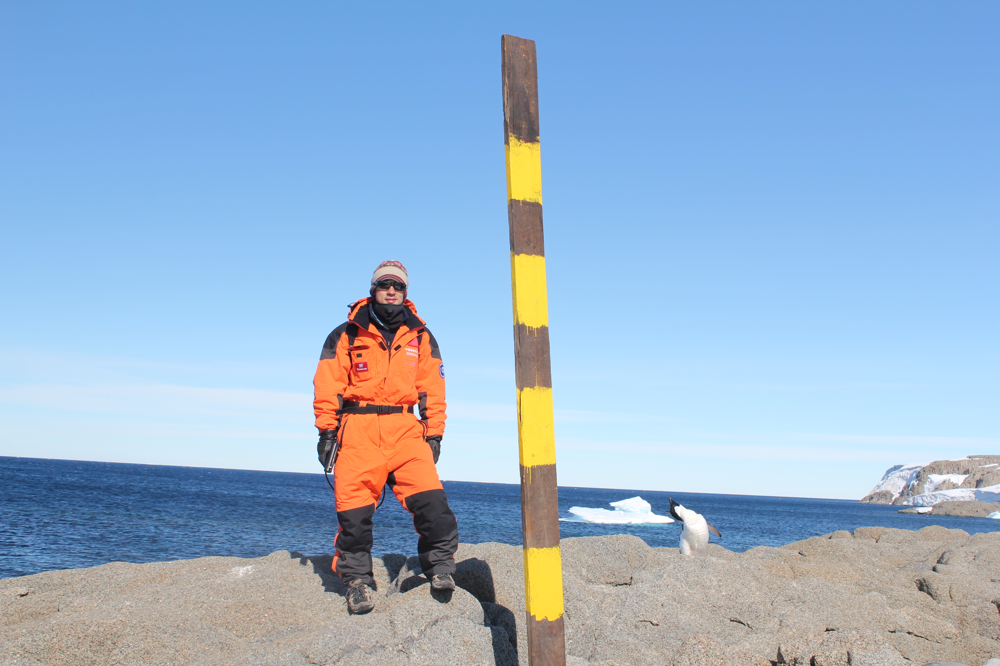

Student and Postdoc Opportunities: RA positions and a postdoc are available at the National Center for Airborne Laser Mapping (NCALM).
Prospective students interested in pursuing graduate degrees in the Geosensing Systems Engineering and Sciences Program with me are encouraged to fill in this Online Form.
I will contact you if further information is needed.

Surui Xie
/suːrɪ/ /ʃiè/
Assistant Professor
Department of Civil and Environmental Engineering
University of Houston
UH NCALM, 5000 Gulf Freeway, Bldg. 4, Rm 216
Houston, TX 77204-5059
Email:
sxie9@central.uh.edu